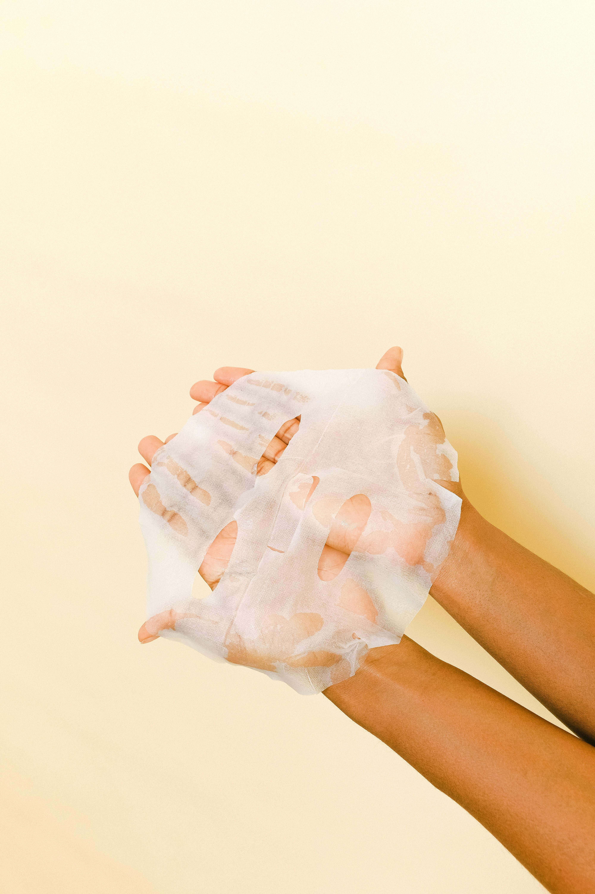
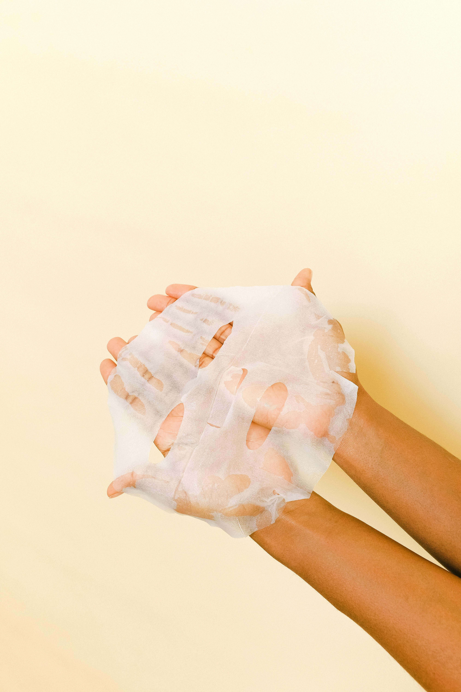
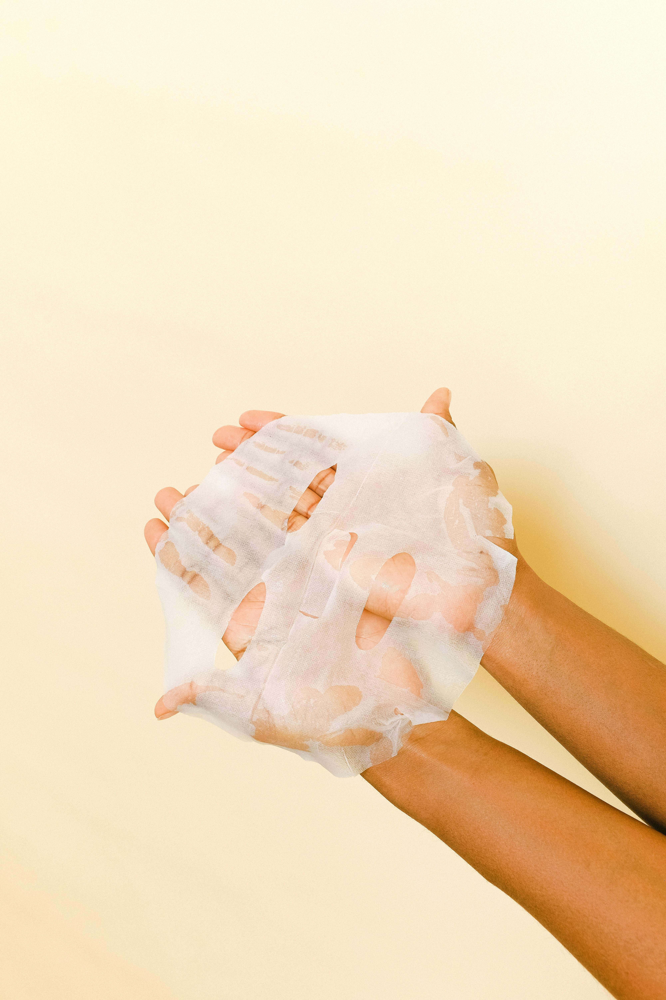

Your Skin is the first line of defense against the world. Caring for your skin isn't just about beauty. Skin care is essential for your health and confidence. Practicing skin care can prevent many skin issues such as, acne, hyperpigmentation, rosacea, sunburn, and much more! Depending on the type of skin your have, whether that be, dry, oily, normal or a combination, there is a set routine that you must follow in the morning and in the night.
